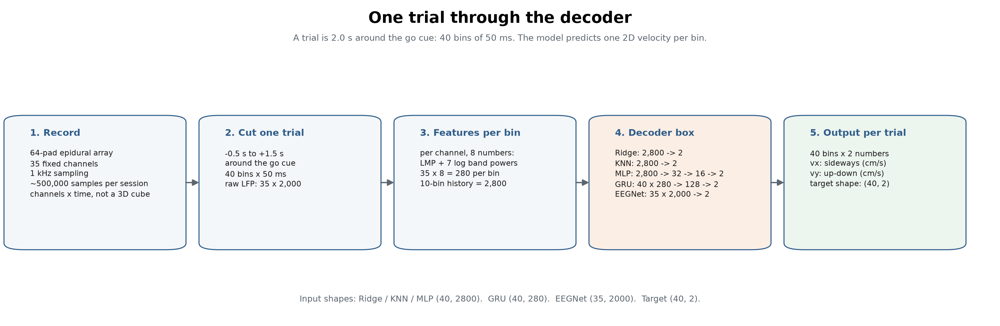
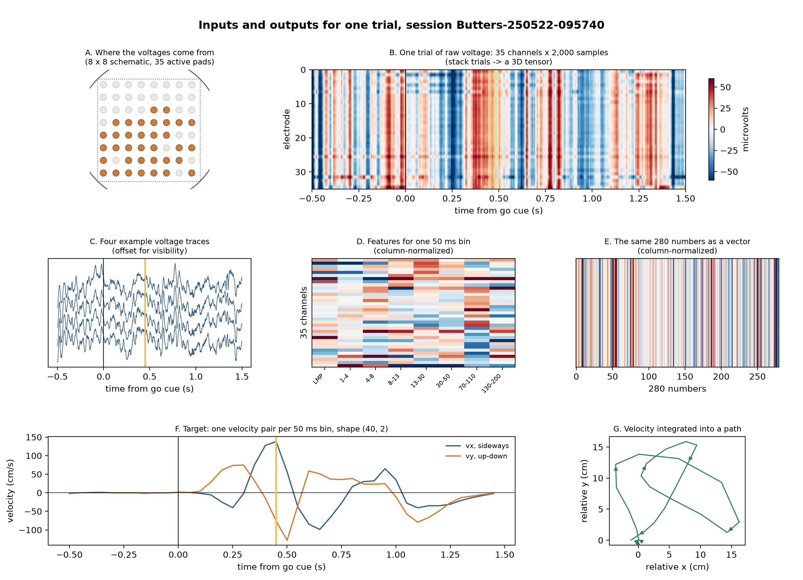

CS182 decoder inputs and outputs
One session is a 2D voltage matrix: 35 fixed electrodes by time. Cutting one trial gives 35 channels by 2,000 samples. Stacking trials gives a 3D tensor. Feature extraction gives 40 bins by 280 numbers, or 40 by 2,800 with ten bins of history. The decoder outputs one velocity pair per 50 ms bin.


Shapes
- One session: 35 channels by about 500,000 samples.
- One trial: 35 channels by 2,000 samples, 2.0 s at 1 kHz.
- Batched trials: trials by 35 by 2,000.
- Features per trial: 40 bins by 35 channels by 8 features, or 40 by 280.
- With ten-bin history: 40 by 2,800.
- Target: 40 bins by 2 velocities, vx and vy in cm/s.